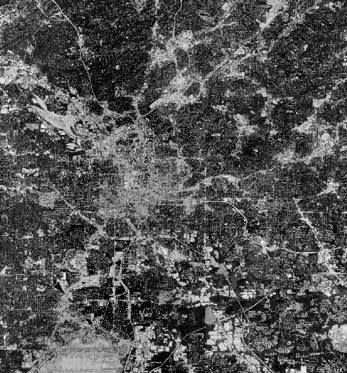
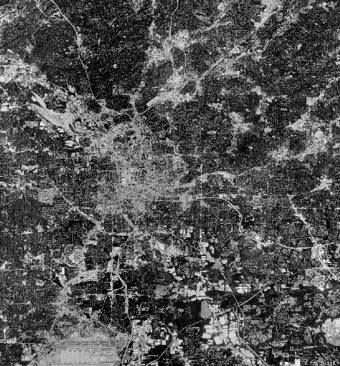
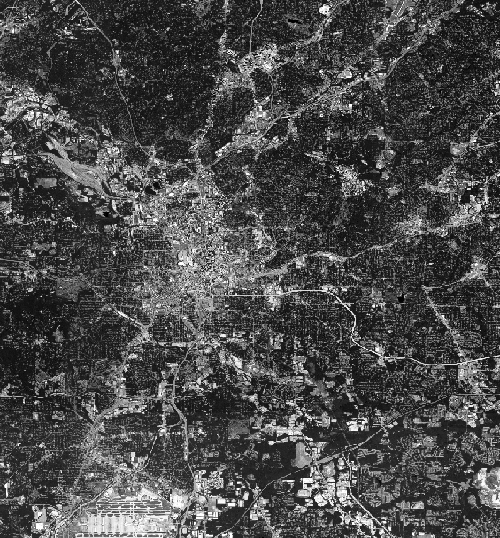
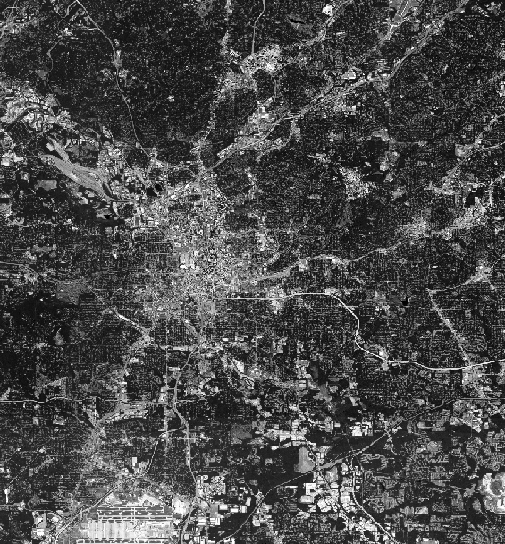

Satellite Imagery of Atlanta Physical Urban Growth - Raster Data
Click the buttons to see images of Atlanta urbanization in various years
Legend: white area is urbanized area. Black area is relatively nonurban.
 


 
